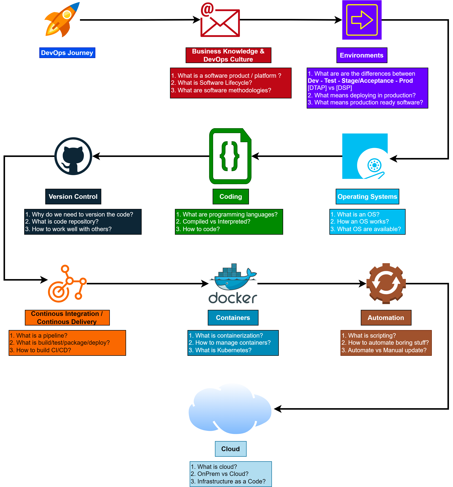

0.2 DevOps Roadmap
The DevOps position implies being able to work with a wide range of technologies and being able to quickly acquire new skills. This roadmap is a good starting point to learn the basics.
Prerequisites
There are some things you need to learn in order get better at it:
- How to work?
How to organize your work?
When something work? How to improve it?
When something doesn’t work? How to fix it?
- How to learn?
There is limited time in our life? What to focus?
Trying out stuff
- How to communicate?
Information technology is a team sport, how to work with others?
How to get and give feedback?
How to ask for help?
How to say no?
When to make a career change?
Important Knowledge
How stuff works? How code work? Where problems can occur?
- Operating systems
Linux
Windows
- Programming languages
Python
Go
Ruby
- Networking and security
OSI Model
LAN and VPN
HTTP and HTTPS
- Server and network management
Web servers vs Application servers
- Databases
SQL vs NoSQL
- Environments
BareMetal
Virtual Machines
Containers
Pods
Cloud
- Orchestration and automation:
scripting: Powershell, Bash
configuration management: Ansible
container orchestration: Kubernetes, Docker
infrastructure as code: Terraform
CI/CD: Jenkins, Gitlab CI, GitHub Action
Monitoring
Software methodologies
DevOps Roadmap
But it’s too much! Where to start? What to learn first? What to learn next?
{kind=link}
Business Knowledge & DevOps culture
Environments
Operating systems
Coding
Git
CI/CD
Containers
Automation
Cloud
Course Goals
Get comfortable with
terminalandLinuxLearn
how to codeand find informationLearn how to
work with othersGet knowledge and
best practicesBuild a
portfolioand work on your resume